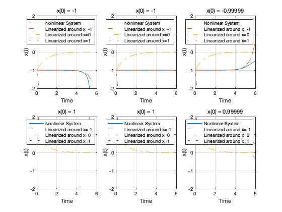
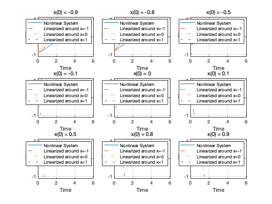

Contents
clear;
clc;
close all;
Model
dxdt = @(t, x) x * (x^2 - 1);
tspan = [0 6];
initial_conditions_group1 = [-1.00001, -1, -0.99999, 1.00001, 1, 0.99999];
initial_conditions_group2 = [-0.9, -0.8, -0.5, -0.1, 0, 0.1, 0.5, 0.8, 0.9];
around -1 & 1
figure;
for i = 1:length(initial_conditions_group1)
x0 = initial_conditions_group1(i);
[t, x] = ode45(dxdt, tspan, x0);
subplot(2, 3, i);
plot(t, x, 'DisplayName', 'Nonlinear System');
hold on;
x_linear_minus_1 = -1 + (x0 + 1) * exp(2 * t);
plot(t, x_linear_minus_1, '--', 'DisplayName', 'Linearized around x=-1');
x_linear_0 = x0 * exp(-t);
plot(t, x_linear_0, '-.', 'DisplayName', 'Linearized around x=0');
x_linear_1 = 1 + (x0 - 1) * exp(2 * t);
plot(t, x_linear_1, ':', 'DisplayName', 'Linearized around x=1');
title(['x(0) = ', num2str(x0)]);
xlabel('Time');
ylabel('x(t)');
ylim([-2, 2]);
legend;
grid on;
hold off;
end
警告: 在 t=5.410021e+00 处失败。在时间 t 处，步长必须降至所允许的最小值(1.421085e-14)以
下，才能达到积分容差要求。
警告: 在 t=5.410021e+00 处失败。在时间 t 处，步长必须降至所允许的最小值(1.421085e-14)以
下，才能达到积分容差要求。

around 0
figure;
for i = 1:length(initial_conditions_group2)
x0 = initial_conditions_group2(i);
[t, x] = ode45(dxdt, tspan, x0);
subplot(3, 3, i);
plot(t, x, 'DisplayName', 'Nonlinear System');
hold on;
x_linear_minus_1 = -1 + (x0 + 1) * exp(2 * t);
plot(t, x_linear_minus_1, '--', 'DisplayName', 'Linearized around x=-1');
x_linear_0 = x0 * exp(-t);
plot(t, x_linear_0, '-.', 'DisplayName', 'Linearized around x=0');
x_linear_1 = 1 + (x0 - 1) * exp(2 * t);
plot(t, x_linear_1, ':', 'DisplayName', 'Linearized around x=1');
title(['x(0) = ', num2str(x0)]);
xlabel('Time');
ylabel('x(t)');
ylim([-1.1, 1.1]);
legend;
grid on;
hold off;
end
